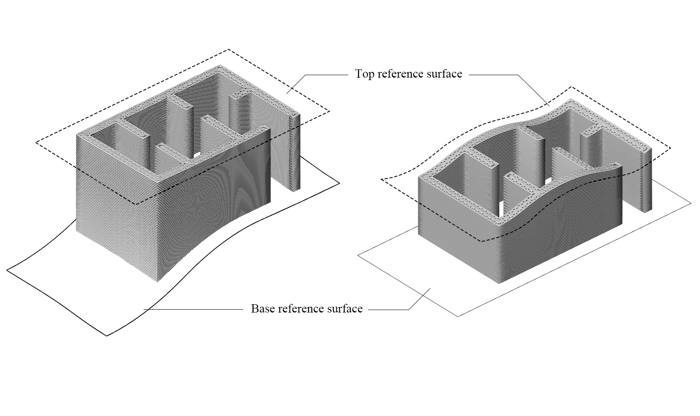
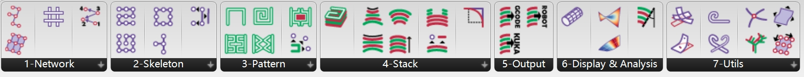
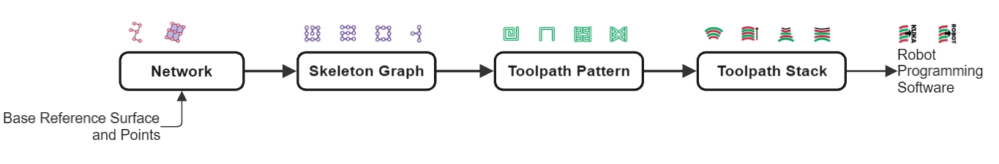
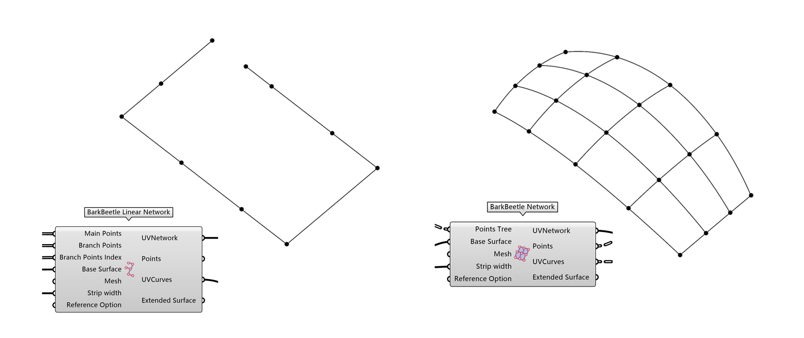
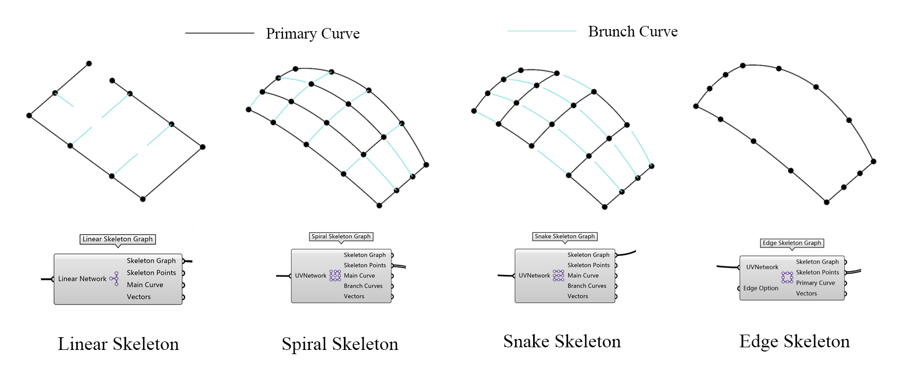
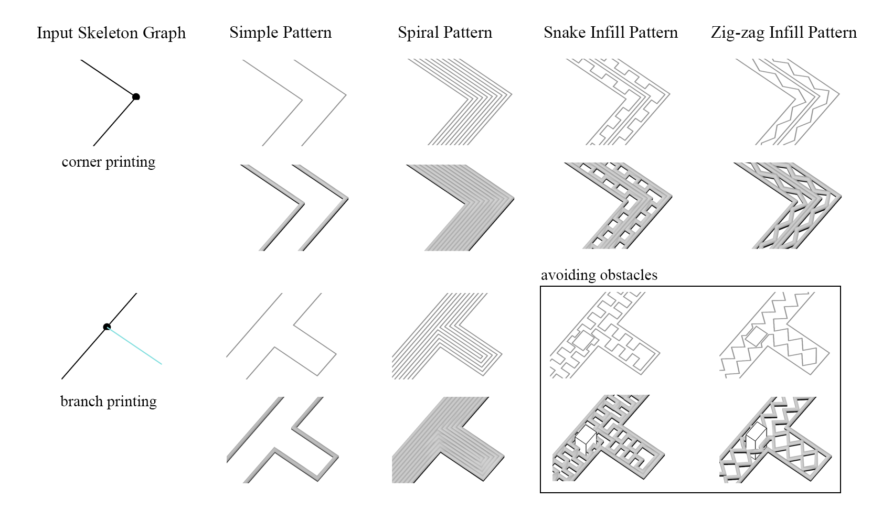
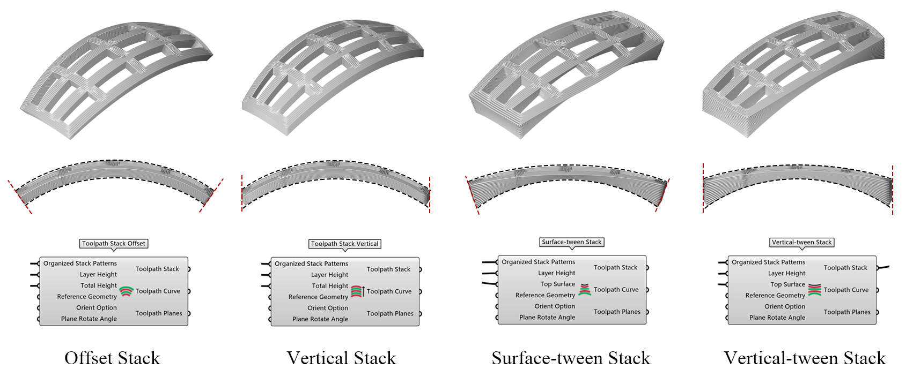
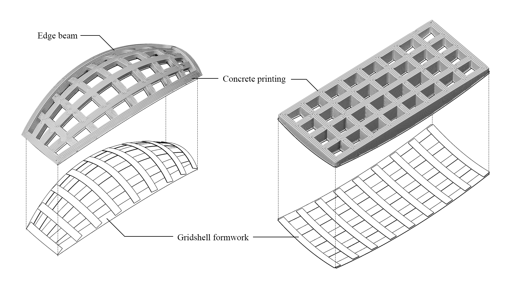

BarkBeetle: Generating Conformal 3D Printing Toolpaths with a Skeleton Graph Approach
Current layer-to-layer manufacturing methods face significant limitations when constructing curved forms and addressing unsupported geometries such as overhangs and bridging structures - a key bottleneck preventing the expansion of this technology to architectural scale applications and inhibiting 3D printing beyond vertical walls toward horizontal floor slabs and wide-spanning roof structures. To address these challenges, we developed BarkBeetle, a Grasshopper plugin that generates optimized toolpaths specifically for non-planar, conformal 3D printing on curved surfaces using strip-based formwork systems to create wide-spanning hybrid gridshell structures. The plugin employs a skeleton graph methodology as the primary framework for printing walls, floor slabs and roof gridshells, unifying the toolpath generation process for diverse complex geometric forms into a streamlined workflow. Additionally, BarkBeetle provides modular combinations of skeleton types, infill patterns, and layer stacking strategies, allowing designers to tailor printing parameters to specific architectural requirements and performance criteria.






